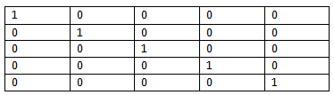

Macierze sa to prostokątne tablice liczb, są w nawiasach kwadratowych. Używane są w matematyce, są odpowiednikiem tablic w informatyce.
Praktycznie jest to to samo
Macierz jednostkowa jest to macierz która po głównej przekątnej ma jedynki, a reszta 0.
Zadanie
Z użyciem rysowania tabeli w wordzie narysować macierz jednostkową 5x5

Zadanie 2
Napisać wzór do generowania (otrzymywania) macierzy jednostkowej 6x6
1<=i<=6 wiersz
1<=j<=6 kolumna
i<>j a[i,j]=0
i==j a[i,j]=1